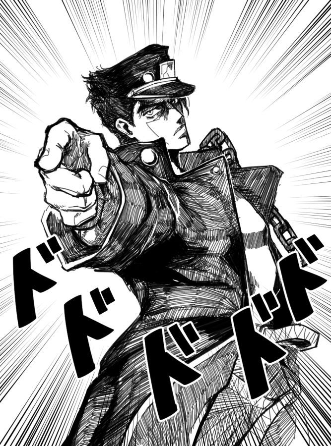
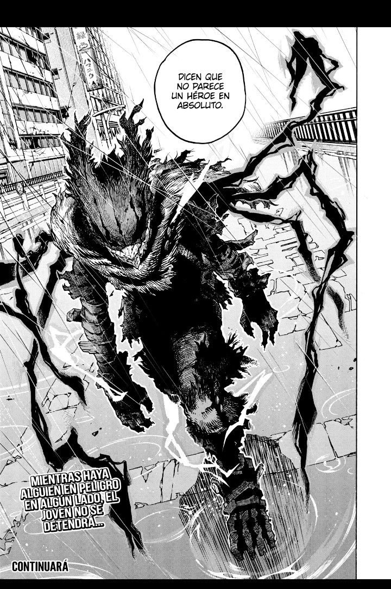

Goku es un luchador Saiyan extraordinariamente fuerte de la serie Dragon Ball Z. Después de una infancia problemática, Goku finalmente se convierte en uno de los más grandes guerreros del universo y defiende la Tierra contra poderosos enemigos.
Goku es un personaje legendario en la serie Dragon Ball Z, conocido por su valentía y su habilidad para superar límites aparentemente imposibles. A lo largo de su vida, lucha contra numerosos enemigos poderosos, siempre en busca de un nuevo desafío y para proteger a sus seres queridos.

Monkey D. Luffy es el capitán pirata de los Piratas del Sombrero de Paja en la serie One Piece. Posee la habilidad de estirar su cuerpo como si fuera de goma después de comer una fruta del diablo, y sueña con convertirse en el Rey de los Piratas.
Monkey D. Luffy, conocido también como Luffy, es un personaje carismático y valiente que navega por el Grand Line en busca del legendario tesoro conocido como el One Piece. En su viaje, recluta a un variado grupo de compañeros y se enfrenta a numerosos desafíos y enemigos poderosos.

Ichigo Kurosaki es un joven con la habilidad de ver espíritus en la serie Bleach. Después de adquirir los poderes de un Shinigami, se embarca en una misión para proteger a los vivos y a los muertos de los peligrosos Hollows y otros enemigos sobrenaturales.
Ichigo Kurosaki es el protagonista de la serie Bleach, conocido por su determinación y coraje en la lucha contra las fuerzas del mal. A lo largo de la serie, se enfrenta a numerosos desafíos y descubre más sobre su propia identidad y el mundo espiritual que lo rodea.